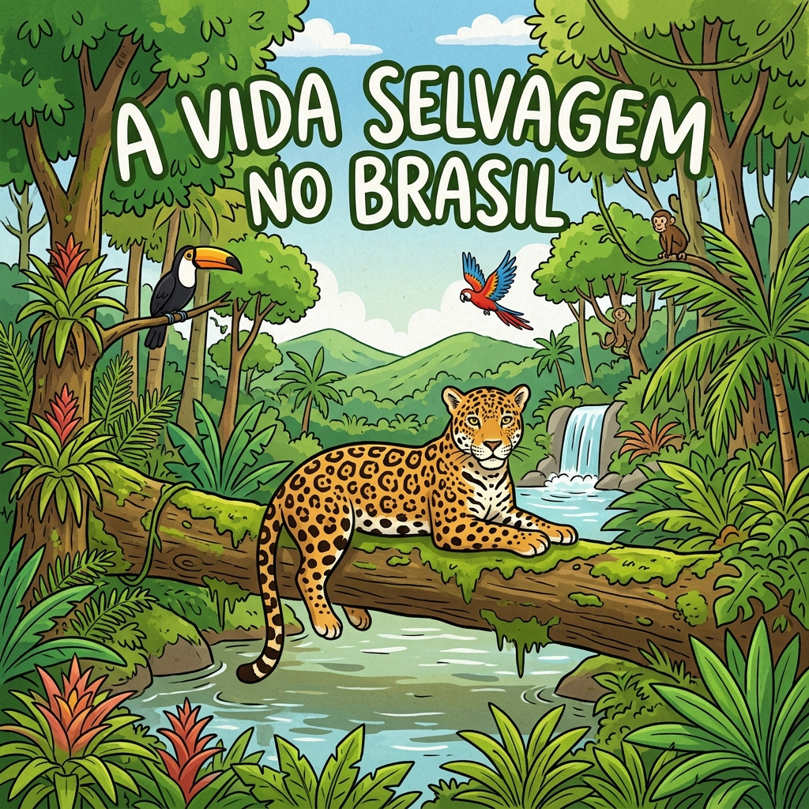
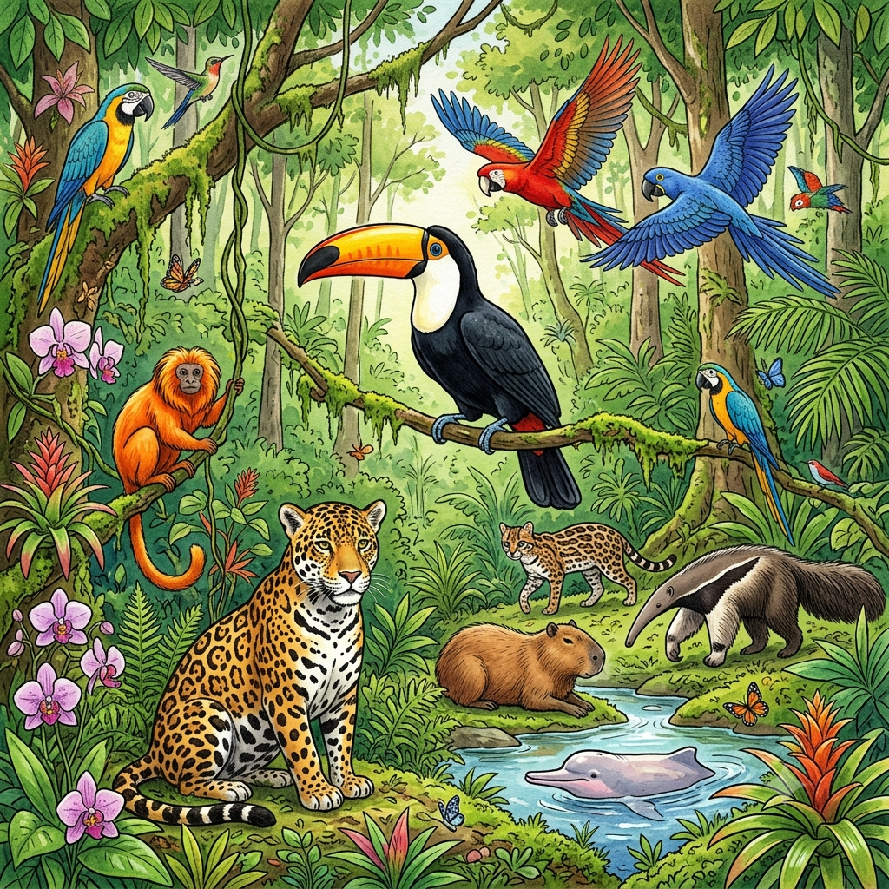

Meu primeiro post
Por: Isabelly Vitória
Bem-vindo! Este espaço foi criado para compartilhar a riqueza e os mistérios do reino animal do nosso país. Prepare-se para descobrir curiosidades fascinantes.

Meu segundo post
A vida selvagem no Brasil é uma das mais ricas do planeta, abrigando animais únicos como a onça-pintada, a arara e o tucano em biomas como a Amazônia e o Pantanal. Preservar essa fauna é essencial para o equilíbrio da natureza.